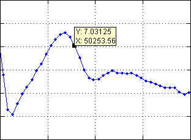
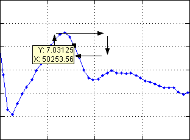
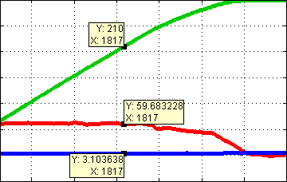
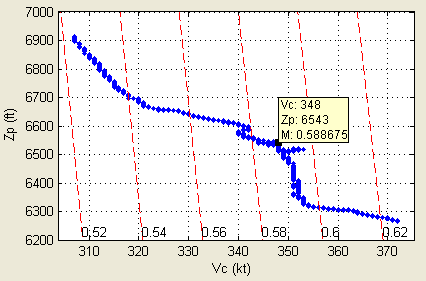

| Menu Exibir |
|
As etiquetas de
dados são caixas
de informações que apresentam os valores precisos dos pontos dos plotes. Em cada plote é
apresentada uma etiqueta, sincronizada com as demais. As etiquetas
podem ser
arrastadas com o mouse (botão esquerdo) e reorientadas (botão direito).
Para habilitar
a exibição das
etiquetas, selecione a opção “Exibir ► Etiquetas de
dados” ou clique no botão  na
Barra de Ferramentas. Para desabilitar, desselecione
a opção ou clique novamente no botão.
na
Barra de Ferramentas. Para desabilitar, desselecione
a opção ou clique novamente no botão.

A etiqueta é
vinculada a um ponto
do plote e apresenta os
valores precisos de x e y
desse ponto.
Para mover a
etiqueta pelos pontos
do plote use o botão
esquerdo do mouse, arrastando-a
até o ponto desejado.
Caso a etiqueta
estiver ocultando
parte do plote ou
esteja fora da área do gráfico, é
possível reorientá-la clicando com o botão direito do mouse. A cada
clique, a
etiqueta será reorientada no sentido horário, alternando entre as posições acima-direita ►
abaixo-direita ► abaixo-esquerda ► acima-esquerda ►
acima-direita.

Caso haja mais
de um plote ou gráfico,
será apresentada uma etiqueta para cada plote
(exceto nos casos “16 plotes”
ou “5 gráficos com 3 plotes”).
As etiquetas de todos os plotes
serão sincronizadas, ou
seja, todas serão vinculadas à mesma observação na matriz de dados. Ao
mover
qualquer etiqueta, as demais também serão movidas.

Caso a opção “Exibir
linhas de Mach”
esteja ativada, os dados apresentados na etiqueta serão: Velocidade
Calibrada (kt), Altitude
Pressão (ft) e Número de Mach:

Por default, o R_DAT
sempre inicia com a
exibição das etiquetas de dados desabilitada.
| |
Linha
de sincronismo |
Linhas de
Mach |
|